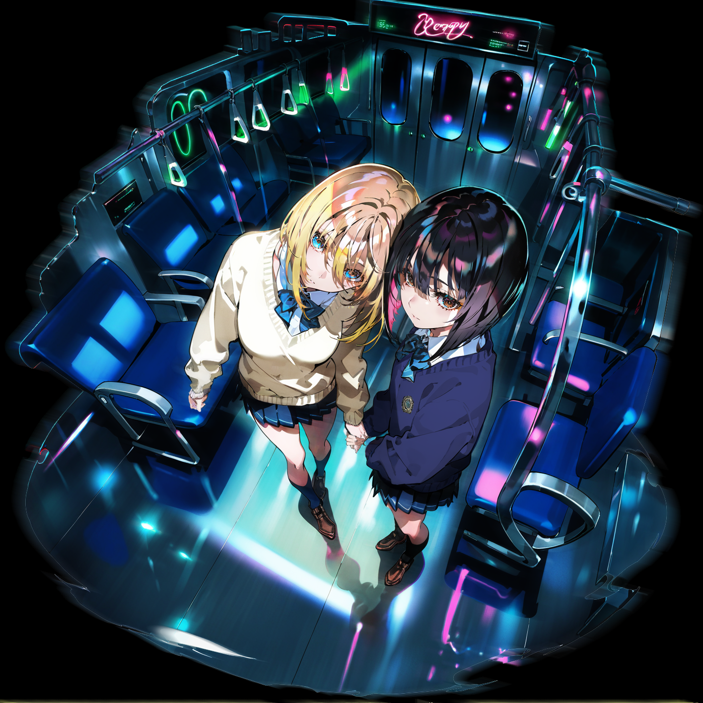

Android App
Scrum Quiz
スクラムマスター試験の学習をサポートする問題集アプリです。
自己学習に加えて、AIコーディング支援を活用しながらアプリを設計・実装し、リリースまで行う経験を得ることを目的に開発しました。
問題演習、学習継続、ユーザーが使いやすいUIを意識し、個人開発として作り切ったプロジェクトです。
Google Antigravity / Claude Code / Android Studio

00
AIを創作と開発のパートナーとして活用し、画像、動画、アプリ、ゲームなど多様なアウトプットを制作しています。 本サイトでは、表現と技術を横断しながら試作・検証してきた成果を掲載しています。
01
Original / fanart / visual experiments
Motion tests / animated outputs
AI creative / character / concept visuals
Fan work / composition / color studies
02
Applications / games / prototypes
Android App
スクラムマスター試験の学習をサポートする問題集アプリです。
自己学習に加えて、AIコーディング支援を活用しながらアプリを設計・実装し、リリースまで行う経験を得ることを目的に開発しました。
問題演習、学習継続、ユーザーが使いやすいUIを意識し、個人開発として作り切ったプロジェクトです。
Google Antigravity / Claude Code / Android Studio
Web Tool
現在開発中のホラー整理パズルゲームです。
イラスト、ギミック案、サウンドなどのリソースをAIで生成し、Godot上でゲームとして実装しています。
AI生成素材を単体で終わらせず、企画・演出・UI・ゲーム体験まで接続することを目的に制作しているプロジェクトです。
開発: Godot / Claude Code / Codex
リソース: Stable Diffusion / Photoshop / ComfyUI
03
About / skills / links
AI Art Direction / Digital Creator
ゲーム・デジタルコンテンツ領域を中心に、企画、アートディレクション、2D制作、進行管理、AI活用を横断して活動しています。
これまで、キャラクターコンテンツの制作支援、外部制作ラインの構築、アセット管理、AIを活用した制作ワークフローの検証・導入などに携わってきました。
現在は、AIを活用した画像・動画制作に加え、個人でアプリやゲームの開発にも取り組んでいます。企画意図を素早く視覚化し、関係者が判断しやすい形に整理することを得意としています。
アイデアをただ形にするだけでなく、目的や体験価値が伝わる表現に落とし込むことを大切にしています。 また、制作物そのものの品質だけでなく、制作フローやチーム内での共有しやすさも重視しています。
AI Creative / Game Planning / Art Direction / 2D Design / Motion / App Development / Interaction / Asset Management
Stable Diffusion / ComfyUI / Claude Code / Codex / ChatGPT / Gemini / Photoshop / After Effects / Unity / Godot